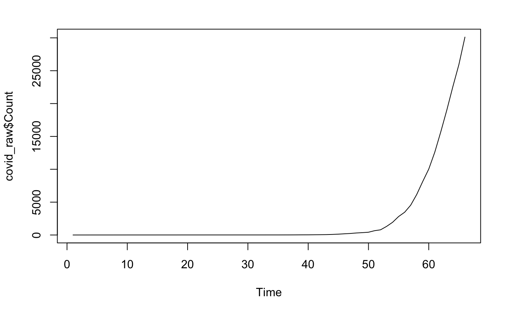
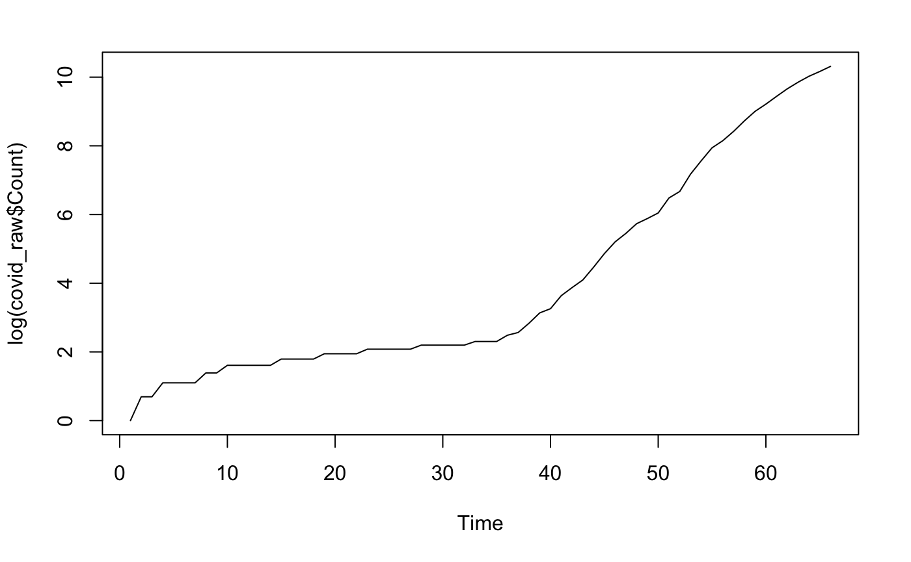
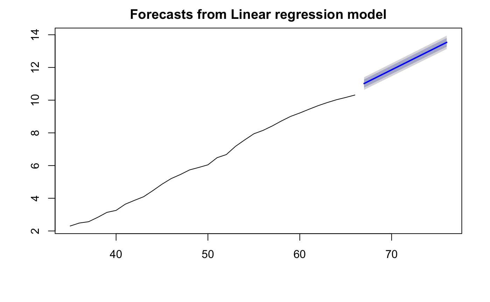
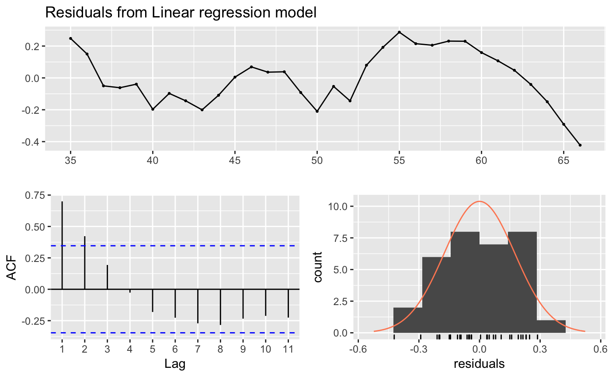
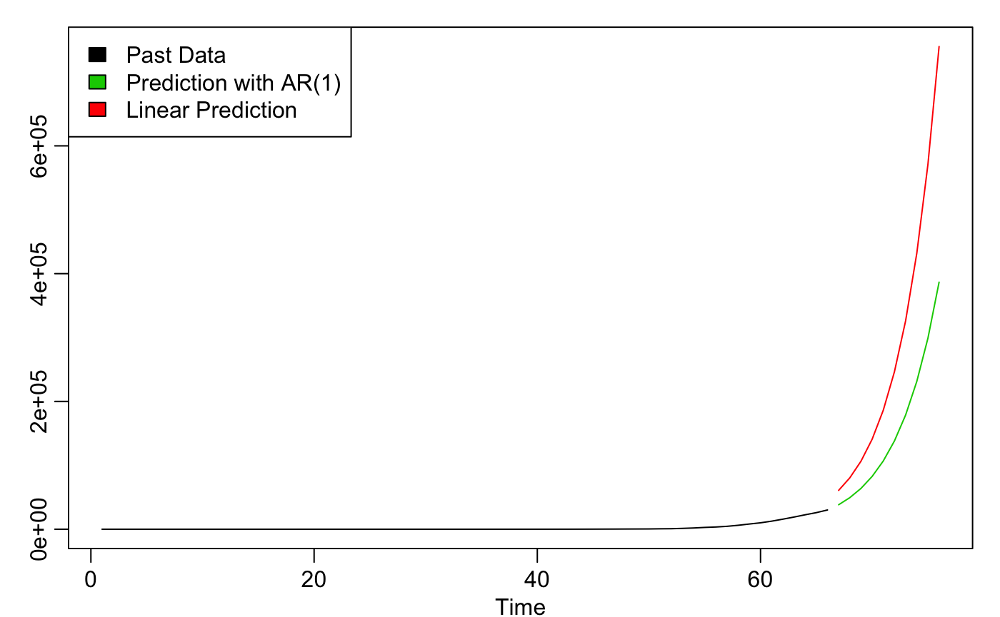

Forecasting COVID
SOME AWESOME HERO TAGLINE
Today we will be looking at the decade number of COVID-19 cases in Timeseria to see if we can forecast how this virus will continue to spread in the country. The most natural starting point to analyze a univariate (single variable - in this case, number of infections) time series is to plot it.

Wow! the number of detected infections seems to grow so quickly. In fact, this explosive growth could be an indicator of an exponential function. If you don’t remember, an exponential function is defined by:
x(t) = a * x(t-1) or x(t) = a^t or x(t) = x(t-1) + c*x(t-1)
which models the idea that the number of new people infected grows proportionally to the number of people that are already infected. We can transform this series into something easier to work with by taking its log:

There we go! Now we have something that looks linear, which makes our job a lot more straightforward. If we try to model the last 30ish days of data with a linear trend, we get a model that looks quite reasonable:

This should give us a rough idea of what to expect from COVID in the future, but there’s actually one more step we can take to get more accurate estimates. You might notice that the residuals (how far off our model is from the true data) still show some sort of pattern. We can try to model this leftover pattern as an autoregressive process, which basically means that each successive entry in our series is proportional to the one right before it, with some noise. We can try to predict these residuals and add them back into our linear model. We can exponentiate our predications (remember that we took the log of our data at the start) and compare to our original estimate. Our new model shows a similar growth pattern as the original, but the dampening effect of the residuals slows that growth a bit.

And remember, this is only the story if we don’t change our response to the virus. Better testing and social distancing can very well change the story! Stay safe!